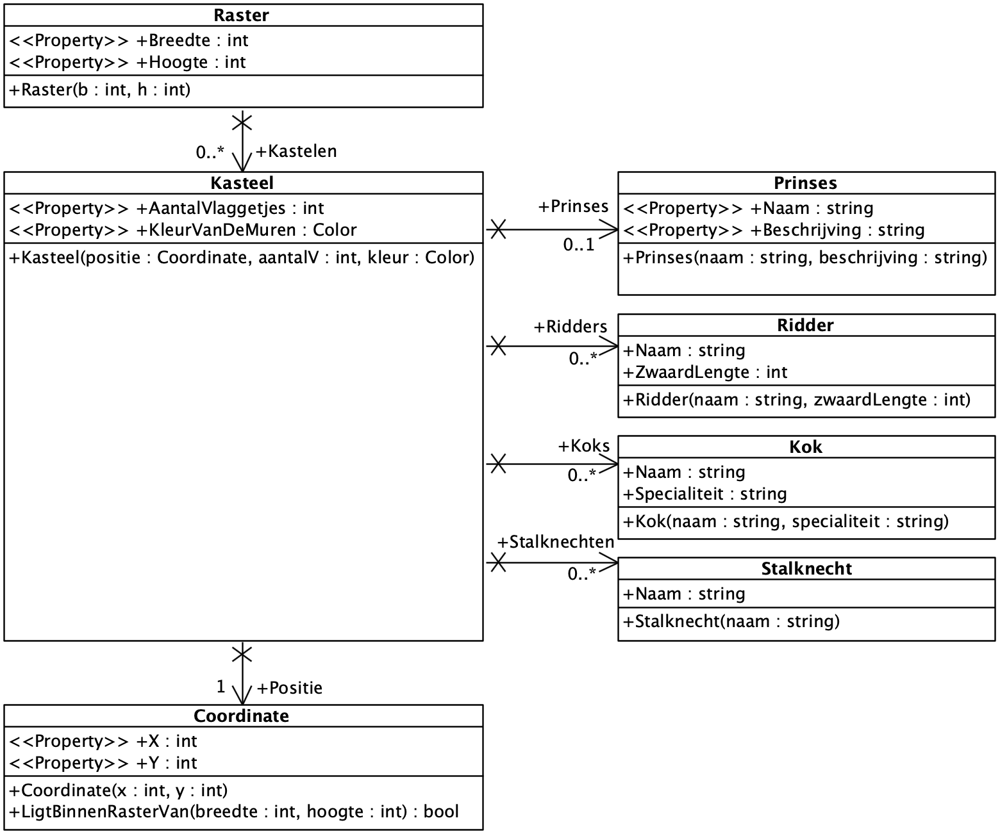
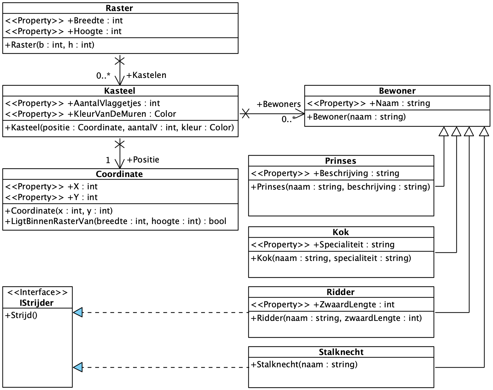

DCD & Overerving
Een solitaire klasse voorstellen als UML is nuttig, maar een diagram wordt pas echt nuttig wanneer dit in een oogopslag overzicht biedt. Om de waarde van onze UML-diagrammen te verhogen, zullen we dus de volledige rijkdom van een OO-taal moeten leren voorstellen.
Het Domain Class Diagram (DCD) is een diagram die (een deel van) de structuur van het probleemdomein in kaart brengt. Het is een zeer technisch diagram dat nagenoeg letterlijk naar broncode vertaald kan worden.
Associaties
We hernemen de context van de vorige les, namelijk de klassen Raster, Kasteel en Coordinate.

Het spreekt voor zich dat deze concepten op een bepaalde manier aan elkaar gerelateerd zijn. Een Raster bevat meerdere kastelen en een Kasteel staat op een bepaalde Coordinate.
De associaties tussen deze klassen werden nog niet volledig opgenomen in onze code en UML.
Kasteel - Coordinate
public class Kasteel {
public Coordinate Positie {get; private set;} (1)
public int AantalVlaggetjes {get; private set;}
public Color KleurVanDeMuren {get; private set;}
public Kasteel(Coordinate positie, int aantalV, Color kleur) {
Positie = positie;
AantalVlaggetjes = aantalV;
KleurVanDeMuren = kleur;
}
}| 1 | Een Kasteel bevat een Coordinate. |
We brengen de associatie - het verband - tussen Kasteel en Coordinate in kaart.
- Klassen
-
-
De klasse
Kasteel. -
De klasse
Coordinate.
-
- Associatie
-
Een associatie (een lijn) die
KasteelenCoordinateverbindt.-
navigeerbaarheid
Ze loopt in één enkele richting vanKasteelnaarCoordinate. Dit wil zeggen dat de klasseKasteeleenCoordinatekent als eigenschap, maar niet omgekeerd. -
multipliciteit
Ze specifieert het aantalCoordinateobjecten, namelijk 1, in deze relatie. -
eigenschap
Ze specifieert de naam (Positie) en visibiliteit (+ ⇒ public) van de eigenschap waaronder de associatie in de broncode vanKasteelgekend is. In C# zal dit meestal eenPropertyzijn.
-
| Wanneer de associatie in twee richtingen bestaat, laten we de pijl en het kruis vallen. |
Alle multipliciteiten zijn uit te drukken als n..m maar kunnen vaak korter geschreven worden.1 ⇒ exact 1* ⇒ 1 of meer0..1 ⇒ 1, optioneel0..* ⇒ veel, optioneelMeestal komt het er op neer dat we willen weten of het veld verplicht is en het een lijst of enkelvoudige waarde is. Varianten daarop hebben weinig tot geen impact op het ontwerp. |
Raster - Kasteel
Als we kracht van klassen verder willen benutten, zou het een goed idee zijn de associatie tussen Raster en Kasteel te concretiseren.
- Associatie
-
Een associatie (een lijn) die
RasterenKasteelverbindt.-
navigeerbaarheid
Ze loopt in één enkele richting vanRasternaarKasteel. Dit wil zeggen dat de klasseRastereenKasteelkent als eigenschap, maar niet omgekeerd. -
multipliciteit
Ze specifieert het aantalKasteelobjecten, namelijk "veel, optioneel", in deze relatie. -
eigenschap
Ze specifieert de naam (Kastelen) en visibiliteit (+ ⇒ public) van de eigenschap waaronder de associatie in de broncode vanRastergekend is. In C# zal dit vaak, maar niet altijd, eenPropertyzijn.
-
public class Raster {
public int Breedte {get; private set;}
public int Hoogte {get; private set;}
public List<Kasteel> Kastelen {get, private set;} (1)
public Raster(int b, int h) {
Breedte = b;
Hoogte = h;
kastelen = new();
}
}-
De lijst van kastelen wordt opgenomen in de broncode van
Kasteel.
Intussen hebben we al heel wat bruikbare structuur en semantische rijkdom in het DCD en de C# code.
var raster = new Raster(3,3);
var kasteel1 = new Kasteel( new Coordinate(0,2), 3, Color.Cyan );
raster.Kastelen.Add(kasteel1);
var kasteel2 = new Kasteel( new Coordinate(1,0), 3, Color.Blue );
raster.Kastelen.Add(kasteel2);
var kasteel3 = new Kasteel( new Coordinate(2,1), 3, Color.Cyan );
raster.Kastelen.Add(kasteel3);
foreach( var k in raster.Kastelen )
Console.WriteLine(
$"Een {k.Color} kasteel op {k.Positie.X},{k.Positie.Y}."
);Prinses
We breiden het scenario verder uit door toevoeging van een Prinses. Elk kasteel kan bewoond zijn door een Prinses. Een prinses heeft altijd een Naam en een Beschrijving.

We voegen de klasse toe op het DCD, rekening houdende met de verkregen informatie.
We schrijven code voor de klasse Prinses.
public class Prinses {
public string Naam {get; private set;}
public string Beschrijving {get; private set;}
public Prinses(string naam, string beschrijving)
{
Naam = naam;
Beschrijving = beschrijving;
}
}We passen de klasse Kasteel aan. Deze krijgt een nieuwe property Prinses. Op het DCD zien we dat de Prinses geen deel uitmaakt van de Kasteel constructor. Een Kasteel kan dus bestaan zonder Prinses. We kunnen concluderen dat het een gewone publieke property is.
public class Kasteel {
public Coordinate Positie {get; private set;}
public int AantalVlaggetjes {get; private set;}
public Color KleurVanDeMuren {get; private set;}
public Prinses Prinses {get; set;} (1)
public Kasteel(Coordinate positie, int aantalV, Color kleur) {
Positie = positie;
AantalVlaggetjes = aantalV;
KleurVanDeMuren = kleur;
}
}| 1 | De Prinses als publieke property. |
We kunnen een Prinses object toewijzen aan een bestaand Kasteel.
var kasteel1 = new Kasteel(new Coordinate(0,2), 3, Color.Cyan);
var pruts = new Prinses("Pruts", "Eet graag taartjes");
kasteel1.Prinses = pruts;We kunnen hier gebruik van maken om te controleren of een Kasteel bewoond is.
var raster = new Raster(3,3);
var kasteel1 = new Kasteel( new Coordinate(0,2), 3, Color.Cyan );
kasteel1.Prinses = new Prinses("Pruts", "Eet graag taartjes"); (1)
raster.Kastelen.Add(kasteel1);
var kasteel2 = new Kasteel( new Coordinate(1,0), 3, Color.Blue );
raster.Kastelen.Add(kasteel2);
var kasteel3 = new Kasteel( new Coordinate(2,1), 3, Color.Cyan );
kasteel3.Prinses = new Prinses("Tuttebel", "Heeft kleine voetjes");
raster.Kastelen.Add(kasteel3);
foreach( var k in raster.Kastelen )
{
Console.WriteLine($"{k.Color} kasteel op {k.Positie.X},{k.Positie.Y}.");
if( k.Prinses is not null ) (2)
Console.WriteLine("Het is bewoond!");
}| 1 | Het Kasteel krijgt een Prinses toegewezen voor we dit toevoegen aan het Raster. Dat is een logisch moment, maar geen noodzaak. Het Raster heeft immers gewoon een referentie naar de verschillende Kasteel objecten, géén kopijen. |
| 2 | We controleren of de Prinses ingevuld is voor het Kasteel dat behandeld wordt. Daaruit kunnen we concluderen of het Kasteel bewoond is. |
Overerving
Een Kasteel dat enkel bewoond wordt door een Prinses kan natuurlijk niet functioneren. Iemand moet het échte werk doen. We introduceren Ridder, Stalknecht en Kok.
Nieuwe Bewoners
-
Een
Ridderheeft eenNaamen eenZwaardLengte. -
Een
Stalknechtheeft eenNaam. -
Een
Kokheeft eenNaamen eenSpecialiteit. -
Elke klasse heeft een constructor met de vereiste eigenschappen.
-
Een
Kasteelkan0..*van alle klassen hebben.
We voegen de nieuwe klassen toe aan het DCD, rekening houdende met de verkregen informatie.

Dit vertaalt zich naar drie nieuwe C# klassen.
public class Ridder {
public string Naam {get; private set;}
public int ZwaardLengte {get; private set;}
public Ridder(string naam, int zwaardLengte)
{
Naam = naam;
ZwaardLengte = zwaardLengte;
}
}public class Stalknecht {
public string Naam {get; private set;}
public Stalknecht(string naam)
{
Naam = naam;
}
}public class Kok {
public string Naam {get; private set;}
public string Specialiteit {get; private set;}
public Kok(string naam, string specialiteit)
{
Naam = naam;
Specialiteit = specialiteit;
}
}De klasse Kasteel wordt wederom uitgebreid.
public class Kasteel {
public Coordinate Positie {get; private set;}
public int AantalVlaggetjes {get; private set;}
public Color KleurVanDeMuren {get; private set;}
// bewoners
public Prinses Prinses {get; set;}
public List<Ridder> Ridders {get; set;}
public List<Kok> Koks {get; set;}
public List<Stalknecht> Stalknechten {get; set;}
public Kasteel(Coordinate positie, int aantalV, Color kleur) {
Positie = positie;
AantalVlaggetjes = aantalV;
KleurVanDeMuren = kleur;
Ridders = new();
Koks = new();
Stalknechten = new();
}
}Probleem
Tijd om ook deze klassen te integreren in het lopend voorbeeldscenario.
var raster = new Raster(3,3);
var kasteel1 = new Kasteel( new Coordinate(0,2), 3, Color.Cyan );
kasteel1.Prinses = new Prinses("Pruts", "Eet graag taartjes");
kasteel1.Ridders.Add(new Ridder("Rand", 150));
kasteel1.Ridders.Add(new Ridder("Mat", 130));
kasteel1.Ridders.Add(new Ridder("Perrin", 140));
kasteel1.Koks.Add(new Kok("Loial", "A volonté");
raster.Kastelen.Add(kasteel1);
var kasteel2 = new Kasteel( new Coordinate(1,0), 3, Color.Blue );
kasteel2.Stalknechten.Add(new Stalknecht("Ged"));
kasteel2.Stalknechten.Add(new Stalknecht("Tenar"));
raster.Kastelen.Add(kasteel2);
var kasteel3 = new Kasteel( new Coordinate(2,1), 3, Color.Cyan );
kasteel3.Prinses = new Prinses("Tuttebel", "Heeft kleine voetjes");
kasteel3.Ridders.Add(new Ridder("Lan", 150));
raster.Kastelen.Add(kasteel3);Ook deze keer zullen we bekijken of de kastelen bewoond zijn.
foreach( var k in raster.Kastelen )
{
Console.WriteLine($"{k.Color} kasteel op {k.Positie.X},{k.Positie.Y}.");
// is het kasteel bewoond?
if( k.Prinses is not null || k.Ridders.Any()
|| k.Koks.Any() || k.Stalknechten.Any())
Console.WriteLine("Het is bewoond!");
}De logica om te bepalen of een Kasteel bewoond is, werd een stuk complexer. We zouden deze logica kunnen encapsuleren in de klasse Kasteel, maar ook dan zal een nieuw type bewoner steeds impact hebben op dit stuk logica.
Oplossing
We kunnen, en zullen, ervoor kiezen de kracht van onze OO-taal te benutten om dit probleem op te lossen door het ontwerp aan te passen zodat de logica eenvoudig blijft.
Ridder, Prinses, Stalknecht, Kok - ze hebben allen hun eigenheid, maar per slot van rekening zijn het allemaal bewoners van het kasteel. We kunnen gebruik maken van overerving om dit gegeven op te nemen in ons softwareontwerp.
We introduceren de klasse Bewoner en laten Ridder, Prinses, Stalknecht en Kok ervan overerven. De gemeenschappelijke eigenschappen (en eventueel gedrag) brengen we onder in de parent klasse Bewoner. De child klassen Ridder, Prinses, Stalknecht en Kok behouden wat hen uniek maakt.
Eerder besproken associaties, bijvoorbeeld Kasteel - Coordinate zijn van het type "heeft een". Een Kasteel heeft een Coordinate.
Bij overerving betreft het een "is een" relatie. Een Prinses is een Bewoner. Alle prinsessen zijn bewoners, maar niet alle bewoners zijn prinsessen.
Wanneer we het DCD herzien, impliceert dit dat we ook de code moeten herzien.
public class Bewoner {
public string Naam {get; private set;}
public Bewoner(string naam)
{
Naam = naam;
}
}public class Ridder : Bewoner { (1)
public int ZwaardLengte {get; private set;}
public Ridder(string naam, int zwaardLengte) : base(naam) (2)
{
ZwaardLengte = zwaardLengte;
}
}| 1 | Ridder erft over van Bewoner. |
| 2 | De constructor geeft input voor de gedeelde eigenschappen door naar de parent- of super klasse. |
public class Stalknecht : Bewoner {
public Stalknecht(string naam): base(naam)
{
(1)
}
}| 1 | Een Stalknecht heeft geen specifieke eigenschappen dus we moeten hier niets doen. Is de klasse dan nutteloos? Neen, want we willen een bewoner kunnen identificeren als Stalknecht. Dat heeft waarde. |
public class Kok : Bewoner {
public string Specialiteit {get; private set;}
public Kok(string naam, string specialiteit) : base(naam)
{
Specialiteit = specialiteit;
}
}Ook Kasteel is onderhevig aan veranderingen. We reduceren de complexiteit hier door de ontwerpaanpassing.
public class Kasteel {
public Coordinate Positie {get; private set;}
public int AantalVlaggetjes {get; private set;}
public Color KleurVanDeMuren {get; private set;}
public List<Bewoner> Bewoners {get; set;} (1)
public Kasteel(Coordinate positie, int aantalV, Color kleur) {
Positie = positie;
AantalVlaggetjes = aantalV;
KleurVanDeMuren = kleur;
Bewoners = new();
}
}| 1 | Een lijst van Bewoner kan objecten bevatten van bewoner en diens subtypes. |
var raster = new Raster(3,3);
var kasteel1 = new Kasteel( new Coordinate(0,2), 3, Color.Cyan );
kasteel1.Bewoners.Add(new Prinses("Pruts", "Eet graag taartjes"));
kasteel1.Bewoners.Add(new Ridder("Rand", 150));
kasteel1.Bewoners.Add(new Ridder("Mat", 130));
kasteel1.Bewoners.Add(new Ridder("Perrin", 140));
kasteel1.Bewoners.Add(new Kok("Loial", "A volonté");
raster.Kastelen.Add(kasteel1);
var kasteel2 = new Kasteel( new Coordinate(1,0), 3, Color.Blue );
kasteel2.Bewoners.Add(new Stalknecht("Ged"));
kasteel2.Bewoners.Add(new Stalknecht("Tenar"));
raster.Kastelen.Add(kasteel2);
var kasteel3 = new Kasteel( new Coordinate(2,1), 3, Color.Cyan );
kasteel3.Bewoners.Add(new Prinses("Tuttebel", "Heeft kleine voetjes"));
kasteel3.Bewoners.Add(new Ridder("Lan", 150));
raster.Kastelen.Add(kasteel3);Ook deze keer zullen we bekijken of de kastelen bewoond zijn.
foreach( var k in raster.Kastelen )
{
Console.WriteLine($"{k.Color} kasteel op {k.Positie.X},{k.Positie.Y}.");
if(k.Bewoners.Any()) (1)
Console.WriteLine("Het is bewoond!");
}| 1 | De code is dermate eenvoudig en semantisch rijk, dat ze voor zich spreekt. |
Type Controleren
We kunnen ook dynamisch controleren of een object van een bepaald subtype is en conditionele logica uitvoeren.
foreach( var k in raster.Kastelen )
{
foreach( var bewoner in k.Bewoners ) (1)
if ( bewoner is Prinses pr ) (2)
Console.WriteLine($"{pr.Naam}: {pr.Beschrijving}"); (3)
}| 1 | We overlopen alle Bewoners. |
| 2 | We kijken of de huidige bewoner een Prinses is. Zoja, wordt deze als Prinses in de pr variabele gestopt. |
| 3 | We vragen de Beschrijving op. Dit kan alleen werken voor een Prinses, andere klassen hebben die property immers niet. |
Interfaces
Er breekt onrust uit rond het Kasteel en er moet gevochten worden. Niet alle bewoners worden verondersteld de strijd aan te gaan. De Ridder en de Stalknecht wel, de Prinses en de Kok niet.
Ook dit is een probleem dat we kunnen oplossen door conditionele logica te programmeren, of door het ontwerp aan te passen. We opteren - uiteraard - voor de ontwerpaanpassing.

Bij overerving betreft het een "is een" relatie. Een Prinses is een Bewoner. Alle prinsessen zijn bewoners, maar niet alle bewoners zijn prinsessen.
In het geval van interfaces, betreft het een "implementeert een" relatie. Ridder implementeert IStrijder. Interfaces worden gebruikt om de aanwezigheid van bepaald gedrag (methoden) af te dwingen. Wanneer een klasse aangeeft een interface te implementeren, zal de compiler aanwezigheid van de relevante methodes controleren.
| Een klasse kan veel associaties hebben, kan overerven van maximaal klassen en van veel interfaces implementeren. |
Wanneer we het DCD herzien, impliceert dit dat we ook de code moeten herzien.
public interface IStrijder {
public void Strijd();
}public class Ridder : Bewoner, IStrijder { (1)
public int ZwaardLengte {get; private set;}
public Ridder(string naam, int zwaardLengte) : base(naam) (2)
{
ZwaardLengte = zwaardLengte;
}
public void Strijd() (2)
{
Console.WriteLine("Hakt de vijand in twee met zijn zwaard");
}
}| 1 | Belofte dat we IStrijder methodes gaan implementeren. |
| 2 | Implementatie. |
public class Stalknecht : Bewoner, IStrijder { (1)
public Stalknecht(string naam): base(naam)
{
}
public void Strijd() (2)
{
Console.WriteLine("Steekt zijn mestvork in de vijand.");
}
}| 1 | Belofte dat we IStrijder methodes gaan implementeren. |
| 2 | Andere implementatie, eigen aan deze klasse. |
Type Controleren
We hebben een lijst van het type Bewoner met daarin objecten van Ridder, Stalknecht, Prinses en Kok. Sommige van die klassen implementeren IStrijder.
We kunnen Bewoners uit de lijst typechecken op het implementeren van de IStrijder interface en conditioneel de Strijd() methode aanroepen, die op zijn beurt een andere implementatie per type kan hebben.
foreach( var k in raster.Kastelen )
{
foreach( var bewoner in k.Bewoners )
if ( bewoner is IStrijder strijder )
strijder.Strijd();
}